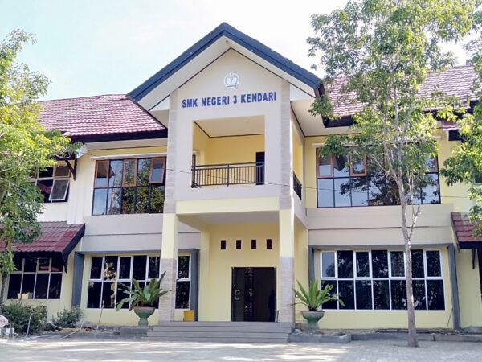

SMK Negeri 3 Kendari sebagai Sekolah Pusat Keunggulan hadir selaras dengan visi Asta Cita pemerintah. Kehadiran ini menjadi bukti nyata komitmen dalam memperkuat kualitas sumber daya manusia khususnya di bidang sains, teknologi, pendidikan, dan kesehatan. Sebagai Sekolah Pusat Keunggulan, SMK Negeri 3 Kendari menjadi simbol semangat baru bagi generasi muda untuk terus belajar, berkembang, dan menjadi insan terampil yang siap bersaing di era global.
Dilengkapi dengan fasilitas modern untuk mendukung pembelajaran yang efektif dan berkualitas
Didukung oleh tenaga pengajar yang berpengalaman dan profesional di bidangnya
Bekerjasama dengan berbagai industri terkemuka untuk praktek kerja lapangan
Memiliki lingkungan sekolah yang aman, nyaman, dan kondusif untuk meningkatkan fokus serta motivasi belajar siswa